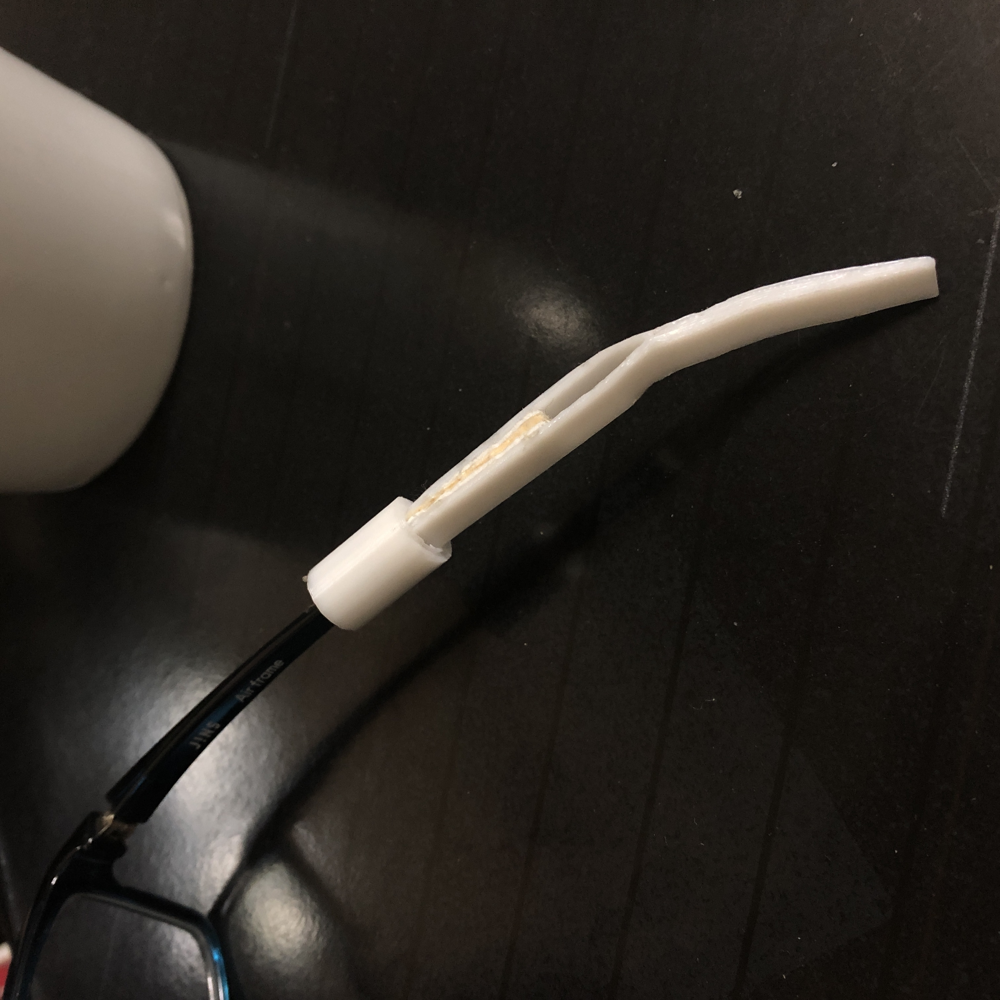
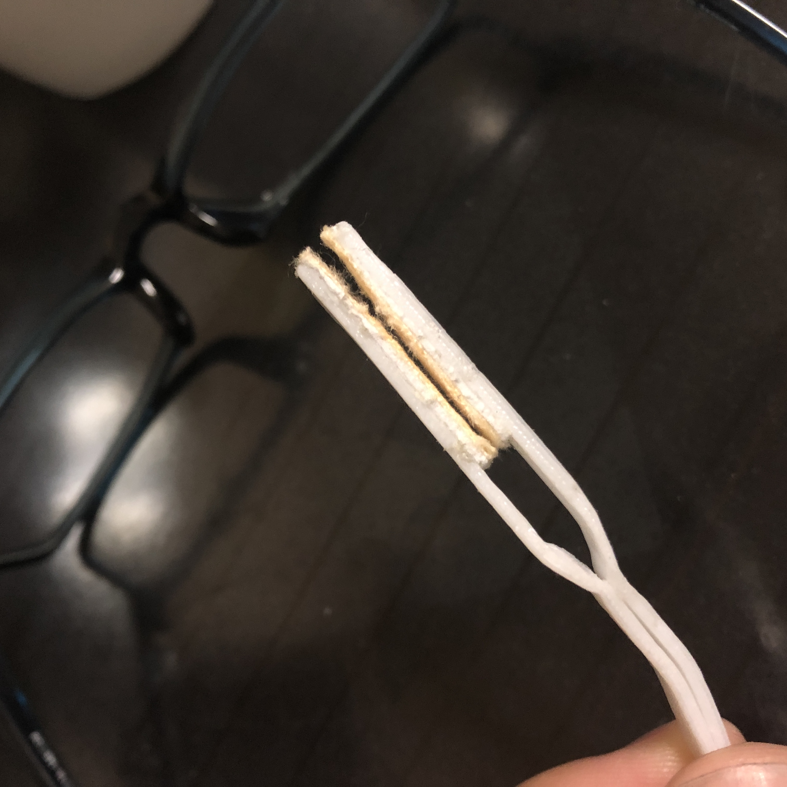
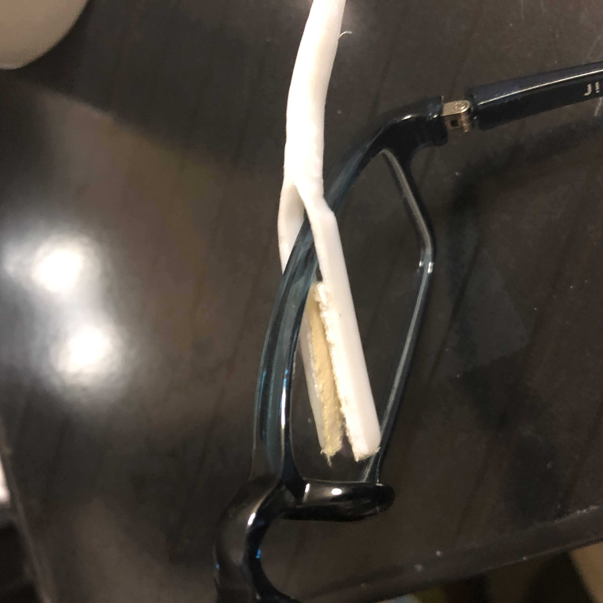

商品コンセプト
僕が作った2wayメガネのコンセプトは、メガネクリーナーを持ち合わせていなくてもメガネを
クリーンに保つことができるとい効率性をコンセプトにしました。
商品の使い方
上の画像のようにメガネフレームの部分が取り外せてその取り外した部分が、バネ特性をもって
いるピンセットようなもので、先端がメガネの油やホコリを取り除くことのできる質感になって
おり、簡単にメガネを拭くとこができます。
クリーナー本体の中央部分を持ちながら両サイドでレンズを挟み、左右に拭き取ります。



ターゲットユーザー
今回ターゲットにおいたのは「メガネをかけている人で、メガネが汚れやすい人」に対象をおき
ました。